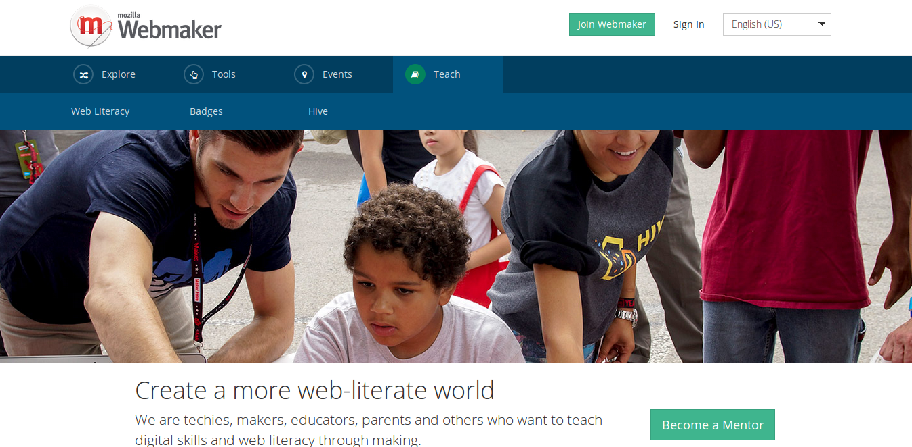

Mozilla & Education
Created by Manel Rhaiem / @manelbutterfly
Mozilla
We're Pushing The Web Since 2011
Why Mozilla Education?
Mozilla Science Lab

Code Review aimed to
- Discipline
- Practice of Building Software
- Collect notes and lessons
- how to keep your software projects healthy and growing
Want to learn?
Join Workshop, help scientist learn skills needed today and tomorrow.
Other Education Program Besides Mozilla Science Lab
- Data Science Training for Libraries / DST4L
- Open Science Training Initiative
- GitHub training
- Creative Commons / P2PU / School of Open's Open Science Course
- Webmaker Teach Templates
- PyLadies
Developer Guide
resources for Learning or Teaching Mozilla Development, Learn Mozilla Platform and how to extend it.
Mozilla Webmaker

Tools
Explore
Event
Teach
Webmaker Community Seek to:
- level up their web literacy
- build and share tools for teaching
- gain peers and networks of practice
- participate in coordinated actions
- identify with a movement that's globally leveraged and locally contextualized